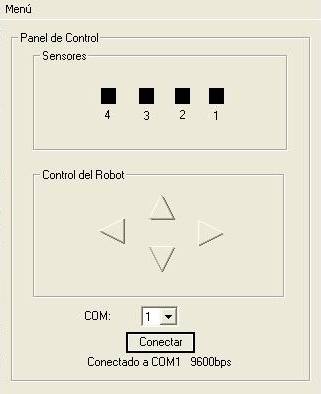

|
Bot-Control: Aplicación para el control del robot skybot |
|
 |
El programa Bot-Control es un cliente para el servidor skybot-monitor, basado en el servidor genérico (proyecto Stargate) que permite manejar el robot skybot desde el PC y leer el estado de los cuatro sensores. Es muy útil para detectar problemas y hacer pruebas.
Plataforma: Windows
Creado para el skybot, pero se puede adaptar fácilmente para cualquier otro robot que use un microcontrolador PIC.
Programa con interfaz gráfica
Licencia GPL. Se conceden permisos para copiar, distribuir, modificar y redistribuir las modificaciones
Es un único fichero ejecutable, compilado estáticamente por lo que no es necesario instalar ninguna librería. Los pasos para instalarlo son:
Bajar el fichero compilado: Bot-Control.exe
Ejecutarlo
Para que funcione es necesario que esté cargado el programa skybot-monitor en la tarjeta Skypic. Viene cargado por defecto, por lo que no hará falta cargarlo si no se ha grabado antes ningún programa.
Alimentar el skybot y conectarlo al puerto serie del PC.
Ejecutar el Bot-Control, e indicar el dispositivo serie. Si no se especifica ninguno se toma por defecto el COM1
Aparecer lo siguiente:
Mediante las flechas del panel de control podremos mover el robot. En la parte superior se muestra el estado de los 4 sensores.
|
Descarga de ficheros para los SKYBOTs verión 1.2 y 1.3 |
|
Ejecutable. Version 1.2. Preparada para utilizarla con el SKYBOT 1.2 y posteriores que llevan la SKY293 |
|
|
Fuentes para Visual C++ 6.0. Preparada para el SKYBOT 1.2. y posteriores que llevan la tarjeta SKY293 |
La documentación con Doxygen de la clase CSGTramas, que permite acceder a los servicios de los servidores cargados en el microcontrolador, está accesible aquí.
Taller de robótica en la Universidad Autónoma de Madrid (UCA2006). Skybot v1.3.
Taller de robótica en la Universidad de Cádiz (UCA2005). Skybot v1.2.
Taller de robótica en la Campus Party 2005 de Valencia. Skybot v1.0.
Servidor skybot-monitor, basado en el servidor genérico.
10/Nov/2005.
Versin 1.3 modificada para el taller de la Universidad de Cádiz que incluye las modificaciones para que funcione con la SKY293.
18/Jul/2005.
Versin 1.2 creada para el taller del área de Campusbot, en la
Campus Party de Valencia